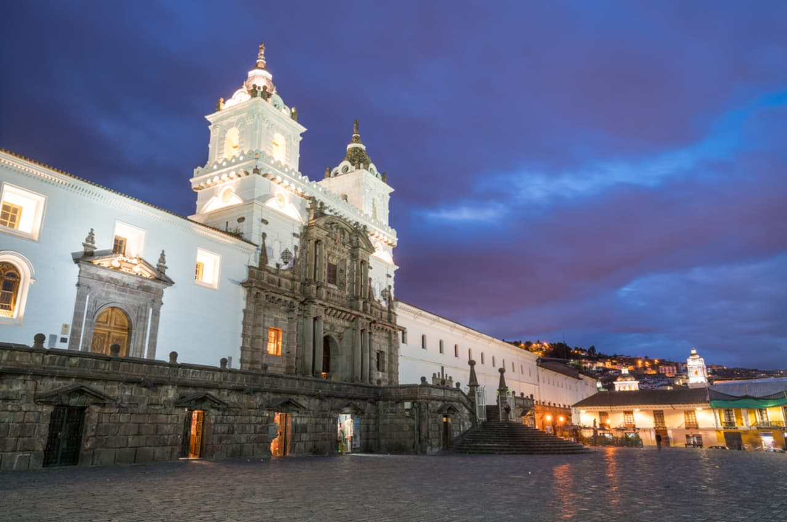
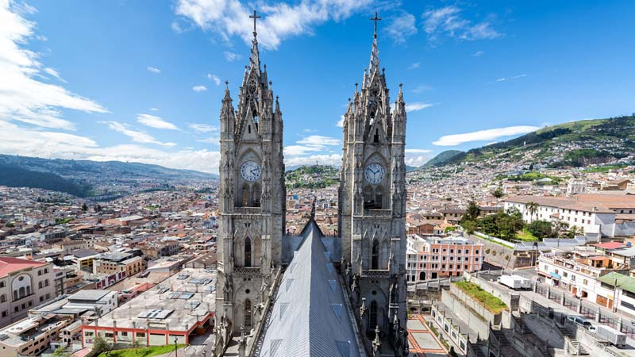
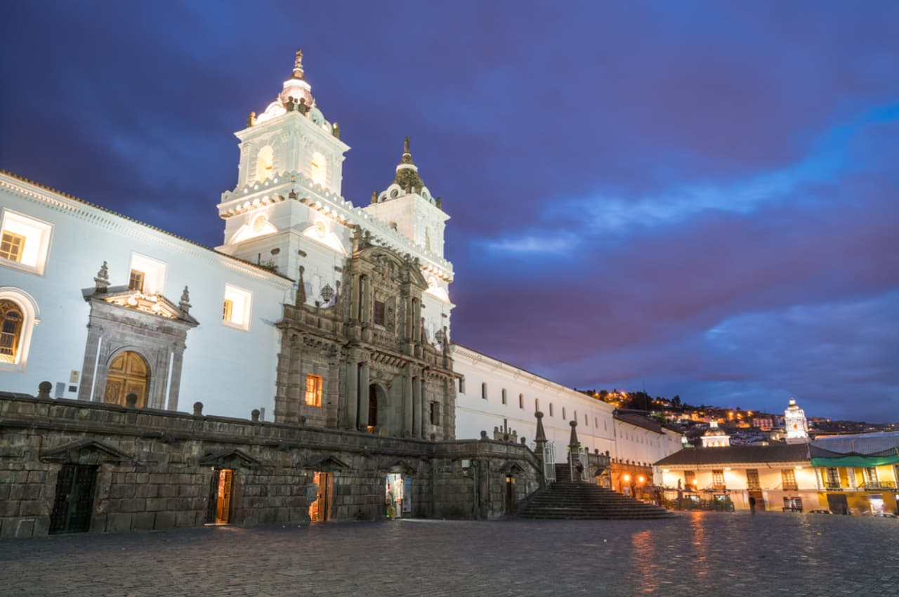
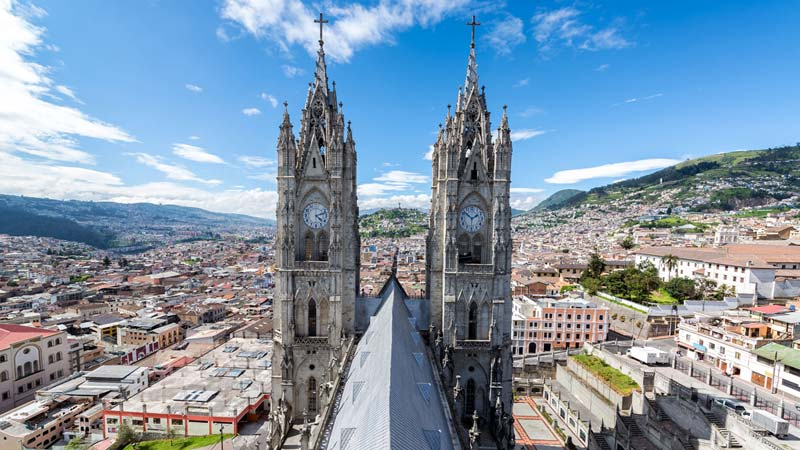

"Hay lugares donde uno se queda, y lugares que quedan en uno"
Zonas turisticas de Quito
Centro del mundo
Uno de los lugares mas visitados en Quito es el monumento «Ciudad Mitad del Mundo”. Existen varios museos donde se a conocer como se determina la exacta posición del Ecuador.
Leer másCatedral Metropolitana de Quito
Templo católico ubicado en el Centro Histórico de la ciudad. Es la sede de la Arquidiócesis Primada de Quito y ocupa todo el flanco sur de la Plaza de la Independencia de la ciudad.
Leer más
Iglesia de la Compañía de Jesus
Es otro lugar con mucha historia en Quito y es una de las joyas del barroco en America. Su interior esta casi todo cubierto de laminas de oro.
Leer másEl Panecillo
Este lugar corta la ciudad en dos, dividiéndola en Norte y Sur. Desde allí se ven los barrios típicos y el centro histórico.
Leer másEl mercado San Francisco
Es donde se puede conseguir las más variadas plantas medicinales, como así también frutas, artesanías y comidas regionales.
Leer másLa Capilla del Hombre
En este lugar, el artista Oswaldo Guayasamin fue destacado en Ecuador y de América Latina, logro manifestar la ira, la protesta y sus sueños, a través de sus pinturas.
Leer másIntereses turisticos
Turismo de romance
Nada mejor que disfrutar en pareja y conoce juntoa es esa persona especial.
Explora y accedeTurismo de aventura
Aventurate a conocer lugares sensacionales que te haran divertir.
Explora y accedeExplora y disfruta
Gastronomia
Ecuador no deja de sorprender a quienes descubren por primera vez las deliciosas comidas, y Quito es perfecto para descubrir los sabores de distintos platos típicos del país.
Leer másQuito moderno
El Quito moderno fue creado para diferir de la construcción colonial que dominó la ciudad por más de 300 años.se mantiene fresco y creativo, renovándose y actualizándose a cada paso.
Leer másAndes
Ecuador es un parque de aventuras, uno de los países ideales para realizar deportes extremos o salir al encuentro de una naturaleza, siempre llena de sorpresas.
Leer másGuias descargables
Guia 1: Descargar guia Esta guia cuenta con todos los detalles para viajar por Quito y disfrutar su turismo. Guia 2: Descargar guia Esta guia contiene descripciones y historias de lugares muy populares de Quito. Guia 3: Descargar guia Esta guia tiene informacion de lugares mas visitados y recomendados de Quito.Formulario - reservacion de hotel
Reserva tu habitacion de hotel"Paisajes turisticos de Quito"

 



Por Beltran Santistevan Carlos Steven